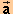
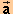

Play the motion, and Pause it at several places. Make a drawing showing the path of the mass point and the acceleration vector at different points of the path.
In a sentence, describe the direction of the acceleration vector of the mass point at different points of the path. Adjectives used to describe this direction are "radial" and "centripetal". Are they appropriate?
Acceleration is the time-rate-of-change of velocity while velocity is the time-rate-of-change of position.
Let's review the relationship between velocity and position.
Reset the applet. Set the initial speed to v(0) = 0.25 m/s, and display the two vectors that in the Vector Panel are called "position" and "velocity at particle".
Play the motion. (For detailed suggestions on what to observe, close this Activities window and go to Activities on Velocity.) Can you confirm the following general statement?
The velocity vector at a given instant points in the direction in which the tip of the position vector is moving at that instant, which is the direction of the tangent to the mass point's path at that instant.
Continuing from Activity 2, click Rewind, make sure the applet is in the Continuous mode, and display a second velocity vector, the one called "velocity at origin" in the Vector Panel, in addition to the velocity-at-particle and position vectors already on display. The new velocity vector has its tail end fixed at the origin and in that sense is like the position vector which has its tail end fixed at the origin also. Notice that the two magenta velocity vectors are identical in magnitude and direction. They differ only in location. Vectors can always be drawn wherever it is convenient.
Play the motion, and observe how the two velocity vectors remain identical throughout the motion.
Click Rewind, and display the velocity trace (Trace V). Then Play the motion. Observe that the trace (magenta) of the tip of the velocity-at-origin vector is circular also, like that of the tip of the position vector. However, imagine the velocity vector and its trace to be in a differenct space, called velocity space, shown superimposed on position space, the space in which the position vector exists. The radius of the circular trace in velocity space is equal to the magnitude of the velocity vector, which is v = 0.25 m/s.
Check your prediction of the direction of the acceleration vector by selecting "acceleration at velocity" in the Vector Panel, and Play the motion.
To focus on just the relationship of the acceleration and velocity-at-origin vectors, hide the other two vectors and the position trace by deselecting "position" and "velocity at particle" in the Vector Panel and deselecting the Trace-P button. Can you confirm the following general statement?
The acceleration vector at a given instant points in the direction in which the tip of the velocity-at-origin vector is moving at that instant, which is the direction of the tangent to the velocity trace at that instant.
With the position and velocity-at-particle vectors still hidden, display a second copy of the acceleration vector, the one called "acceleration at particle" in the Vector Panel. This is the vector displayed in Activity 1 whose direction was called "radial" or "centripetal".
Continuing from Activity 4, select "position", "velocity at origin", and "acceleration at origin" from the Vector Panel, but no other vectors. Hide the position and velocity traces. Thus, only three different-colored vectors should remain on the screen, all of them with their tail ends at the origin.
Play the motion. Since the velocity vector is 90o ahead of the position vector, the acceleration vector should be 90o ahead of the velocity vector. As the applet shows, this makes the direction of the acceleration vector radial and opposite to the position vector.
By the way, when the acceleration vector is drawn with its tail end attached to the origin, can its direction still be called "centripetal" which is derived from Latin and means "center seeking"? Referring to the direction as "radial" is still appropriate.
Activities 2 to 5 are based on the analogy between the acceleration-velocity relationship to the velocity-position relationship. Using this analogy, the activities show that the direction of the acceleration in uniform circular motion is radial.
Reset the applet, set it to the Incremental mode, and set the time step to Dt = 0.50 s. Display only the velocity-at-origin and acceleration-at-velocity vectors. Display the velocity trace (Trace V), but not the path of the particle (Trace P).
Use the Step button to take one step into the motion. Make a
drawing of the velocity vectors  i and f at the beginning and end of the time step,
the change in velocity vector D during the time
step, and the acceleration vector i at the beginning of the time step.
Estimate the angle between the change in velocity and acceleration
vectors.
i and f at the beginning and end of the time step,
the change in velocity vector D during the time
step, and the acceleration vector i at the beginning of the time step.
Estimate the angle between the change in velocity and acceleration
vectors.
Click Rewind, reduce the time step to Dt = 0.25 s, and again take the first step
into the motion. Again, draw all vectors and estimate the angle
between the initial acceleration vector and the change in velocity
vector. Compare the situation to that for Dt = 0.50 s. Can you see that the
direction of D approaches that of i as Dt decreases?
Click Rewind, and repeat these observations once more for a time step Dt = 0.10 s.
Acceleration is defined as the limit of the ratio D/Dt as Dt approaches 0. As Dt approaches 0, does the direction of
/Dt, approach the
direction of the acceleration at the beginning of the time interval?
The change in velocity D forms a cord of the
circular velocity trace. Do you observe that as Dt approaches 0 the direction of the cord
approaches that of the tangent to the path at the initial point of the
given time step?
Can you confirm that the acceleration vector at a given instant points in the direction in which the tip of the velocity vector is moving at that instant, which is the direction of the tangent to the velocity trace at that instant?
Continuing from Activity 6, click Rewind, change the step size back to Dt = 0.50 s, and display the Data box. Make sure the applet is still in the Incremental mode and that no other settings have changed.
Take one step into the motion. Record the values of D and Dt, and work out
the ratio D/Dt in
terms of its x,y scalar components. Compare this ratio
to the initial acceleration i.
Using the x,y scalar components of D/Dt worked out above
and the x,y scalar components of i listed in the Data box,
draw the two vectors D/Dt and i. Draw them with their tail ends joined
for better comparison. For better accuracy, you may want to draw the
vectors on graph paper.
As in Activity 6, repeat this with time steps equal to 0.25 s and 0.10 s.
Does D/Dt approach
i as
the size of the time step decreases?
The applet will let you choose time steps smaller than Dt = 0.10 s, but the values of D/Dt will become
unreliable as the time step becomes too small because of a loss of
significant figures. This is evident visually as well because the
change in velocity vector D becomes hard to
recognize.